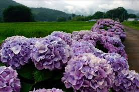

Hello

한반도·중국·일본 등의 동아시아 등지에 분포하며, 본래는 중국 원산이지만, 중국에서는 자생군락이 발견되지 않으며, 일본에서 품종 개량이 많이 되었다.[2] 미스 사오리, 치쿠의 바람, 만화경, 미카의 물떼새 등 특이한 이름으로 판매 중이다. 품종보호 탓에 시중에서 파는 수국보다 꽤 비싸지만(15cm 포트묘 기준 2만원 전후) 정말 풍성하고 아름다운 꽃으로 개량된 품종들이 많다. 영국, 일본의 원예식물 콘테스트가 열릴 때마다 일본산 수국들은 상위권에 위치할 정도로 높이 평가받는다.
높이는 1m 정도이며, 정원용 수국은 1m를 넘을 수 있으며, 작은 화분에서 크는 화분용 수국은 15~20cm까지 자랄 수 있다.
잎은 톱니 모양이다.
그늘지거나 반그늘진 비옥한 토양에서 잘 자란다.
한반도 중부 지역에서는 주로 화분에 심는데, 노지월동이 되는 편이다. 다만 그 해 난 가지에서 꽃을 피우는 수국(당년지수국)이 아니면 중부지방에서 노지에 심을 경우 월동시 보온처리가 없으면 꽃을 보기 어렵고 깻잎만 무성한 걸 보게 된다.
꽃말은 냉정, 냉담과 무정,[3] 변덕, 변심이다.[4] 또, 위와는 다르게 진실한 사랑, 처녀의 꿈,[5], 진심,[6] 인내심이 강한 사랑이라는 꽃말도 존재한다.
또한 꽃의 색으로 토양의 pH를 확인할 수 있는데 pH6.0~6.5 정도의 토양에선 핑크색, pH4.5 정도의 산성토에선 푸른색을 띈다. 토양이 산성에서 점점 중성으로 올라갈수록, 보라색, 자주색, 옅은 자주색, 분홍색으로 변한다. 품종에 따라서 색깔이 고정되는 경우도 있다.
꽃피는 시기가 초여름의 장마철과 겹치는데, 그 이유는 수국이 정말이지 물을 엄청나게 먹어대는 식물이기 때문이다.[7] 기사
초여름, 즉 6월 무렵에[8] 가지 끝에서 둥근 모양인 꽃차례를 이루어 꽃이 핀다. 꽃은 처음에 초록빛 띈 흰색으로 피지만 점차 파란색, 보라색으로 변하는데 토양의 성분에 따라 색이 달라진다. 기사[9] 즉 자체적인 색소에 의해 꽃의 색이 결정되는 게 아니다.[10] 고정적인 특정색을 내려면 토양 관리를 잘 해줘야 한다.[11] 이런 수국꽃의 변화를 일으키는 성분은 '델피니딘(delphinidin)' 이라고 한다.[12]
그리고 수술과 암술은 퇴화하여 작고 열매는 생기지 않는다. 하지만 야생형 수국은 열매를 맺는다.[13]
꽃을 피우고 저물때쯤 잘 잘라서 정리를 해줘야 다음해에도 꽃을 볼 수 있다. 그렇지 않으면 2 ~ 3년간 그냥 깻잎을 키우게 될지도 모른다.[14]
상술했듯, 관상용으로 널리 알려지고 많이 계량되었기에 개량종 수국들은 그 꽃의 색감과 모양이 매우 다양해졌다. 국립종자원에 등록된 수국 품종 목록. 등록된 품종만 해도 많지만 장미나 국화처럼 계속 품종개발이 진행중이다. 품종에 따라 꽃의 기본색상과 모양 뿐만이 아니라 질 때의 색상까지도[15] 개량으로 세세하게 구분된다.
꽃 하나하나는 작지만 여러 개가 모여서 피기 때문에 기본적으로 크고 탐스러운 꽃다발을 이루어, 노지 관상용은 물론 실내 소품용으로도 쓰이거나 부케 등에도 애용된다. 꽃잎 부분만 작게 오려내어 가공해 하바리움 등에 쓰는 편이다.
향수엔 수국향을 표방한 상품들이 있지만 흔히 보는 관상용 수국은 씨 없는 수박의 꽃버전, 무성화이기에 향기가 없다. 이 때문에 꺾꽂이로만 번식할 수 있다. 동일조상에서 갈라지게된 산수국의 경우 차로 마시면 향이 있지만 이건 산수국꽃의 진짜 향이 아니라 잎을 가공해서 만든 차에서 나는 향이다.
토질에도 상관없이 화색이 고정된 품종이 나오고 있지만 토질에 따라 색이 바뀌는 꽃의 경우 품종으로 등록할 때 푸른색을 배제하고 등록한다고 한다.
학명은 Hydrangea macrophylla for. otaksa (S. et Z.) WILS.이다. 범의귀과였다가 2016년 속씨식물 계통연구 그룹(APG·Angiosperm Phylogeny Group)의 분자생물학 연구에 기반을 둔 체계에 따라 수국과로 속을 바꾸었는데 인터넷 등지에는 업데이트가 되지 않은 게 많다.
태종대 태종사, 거제도 해안도로, 하코네 등산철도 주변의 수국이 유명하다고 한다. 사찰 주변에 잘 심는 꽃이며 기르기 쉬운 편이라 정원이나 조경에 잘 이용된다.